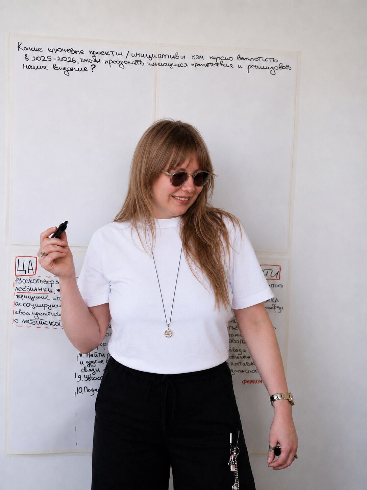
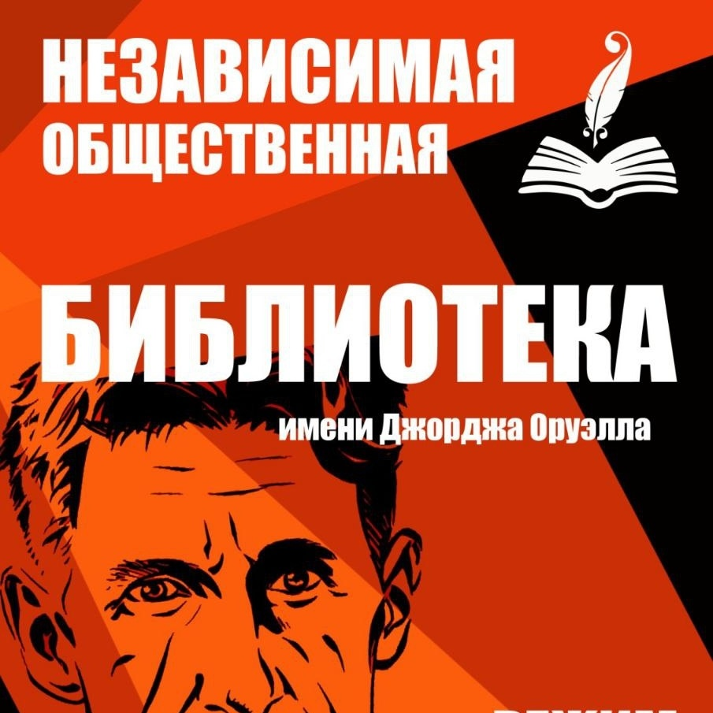

Работа с командами и сообществами
Проектирую и провожу стратегические сессии, командные встречи и мероприятия для больших групп, включая конференции. Работаю с организациями, сообществами и командами, которым важно прийти к ясности, зрелым решениям и реалистичным следующим шагам.

Стратегическая сессия, работа с видением и приоритетами команды
Направление 1
Фасилитация, модерация и проектирование коллективных обсуждений
Глубоко погружаюсь в контекст задачи и проектирую процесс под конкретную ситуацию, учитывая цели команды, внутреннюю динамику, ограничения и чувствительность контекста. При необходимости разрабатываю целый цикл стратегических встреч и сопровождаю команду на этапе внедрения договоренностей.
У меня большой опыт работы с некоммерческими и социальными проектами, в том числе инициативами, которые работают с уязвимыми группами и в сложном чувствительном контексте.
Форматы работы
- Стратегические сессии и процессы организационного развития
- Командные обсуждения и рабочие встречи
- Ретроспективы и рефлексивные форматы
- Фасилитация сложных и конфликтных обсуждений
- Сопровождение циклов стратегической работы
- Модерация публичных дискуссий и экспертных мероприятий
Примеры публичной модерации
- Public Talk от Cheers Queers. «Конфликты в лесбийском сообществе»
- Дейтинг в эмиграции. Дружба, романтика, секс
По запросу отправлю CV и кейсы с подробным описанием опыта.
Направление 2
Консультирование по развитию сообществ, командной культуры и волонтёрского направления
Консультирую команды и проекты, которые развивают сообщества, работают с волонтерами или выстраивают коллективные формы участия.
Помогаю выстраивать устойчивые сообщества и волонтёрские команды, в которых людям понятно, как включаться в работу, взаимодействовать друг с другом и брать на себя ответственность.
Особенно полезна в ситуациях, когда проект растет, усложняется или сталкивается с внутренними противоречиями и нуждается в более зрелой системе организации коллективной работы.
Также консультирую редакции, журналисток и авторские проекты по вопросам квир-инклюзивного языка и чувствительной коммуникации.
Направление 3
Тренинги и обучение по фасилитации, работе с группами и комьюнити-билдингу
Разрабатываю и провожу образовательные программы, тренинги и мастер-классы для команд, сообществ и специалистов, которые работают с людьми, группами и коллективными процессами.
Обучаю фасилитации, проектированию обсуждений, работе с групповой динамикой, конфликтами, командной культурой и другим темам, связанным с организацией совместной работы и коммуникации.
Особенность моего подхода заключается в том, что на обучении я передаю системное понимание работы с группами, а не только отдельные техники. Мы разбираем принципы, по которым проектируются обсуждения, учимся принимать решения в ходе групповой работы и понимать, на что опираться в ситуациях, которые выходят за рамки шаблонных сценариев. Благодаря этому участники уносят с собой подход, который можно адаптировать под самые разные рабочие задачи, включая те, с которыми им еще только предстоит столкнуться.
Каждую программу я разрабатываю под конкретный запрос, уровень подготовки и контекст команды.
Примеры тем тренингов
- Как проектировать обсуждения, после которых у команды появляется ясность и понятный план действий
- Как замечать, что происходит с группой в процессе обсуждения, и направлять эту динамику
- Основы фасилитации для координаторок комьюнити
- Как перестать бояться конфликтов и видеть в них потенциал для развития команды
- Как строить устойчивые сообщества и волонтёрские команды
- Как выстраивать культуру встреч, в которой люди действительно включаются и договариваются
- Стратегические сессии и работа с командным мышлением
- Как использовать фасилитационный подход в лидерстве и управлении командой
- Как устроен комьюнити-менеджмент, от привлечения участников до горизонтальных структур и культуры взаимоподдержки
Аудитория
С кем я чаще всего работаю
Сообщества и инициативные группы
Люди, объединённые общей целью или ценностями, которые стремятся создавать поддержку, знания и пространство для взаимодействия внутри своего сообщества.
Некоммерческие организации и активистские объединения
Те, кто борется за социальную справедливость, права человека и равные возможности и создает проекты и инициативы для общественных изменений.
Создательницы и создатели социальных коммерческих проектов
Люди, которые готовы осмыслить влияние своей деятельности на общество, осознанно строить свою работу и находить баланс между бизнес-целями и социальными ценностями.
Отзывы
Как это работает на практике
Таня с вниманием и чуткостью подошла к нашему состоянию. Стратегическая сессия стала точкой перезапуска нашего движения.
Дарья Серенкокоординаторка ФАС
полный отзыв
Нам удалось совершить качественный переход от растерянности к структуре. Теперь у нас есть четкий план работы на год.

Библиотека им. Дж. ОруэллаИваново, Россия
полный отзыв
Это была самая эффективная фасилитационная работа, которую я видела за последние 8 лет.
Виктория Вяхоревакоммуникации и фандрайзинг в НКО
полный отзыв
По итогам сессии у нас получился конкретный документ. Он был структурированным и отражал всё, что мы обсуждали.
Александра ДжорджевичPR-специалистка для impact-бизнеса и НКО
полный отзыв
Расскажите про вашу задачу
Напишите мне о контексте и текущем запросе. На основе этого я предложу возможный формат работы или честно скажу, если увижу, что вам может подойти другой тип экспертизы.